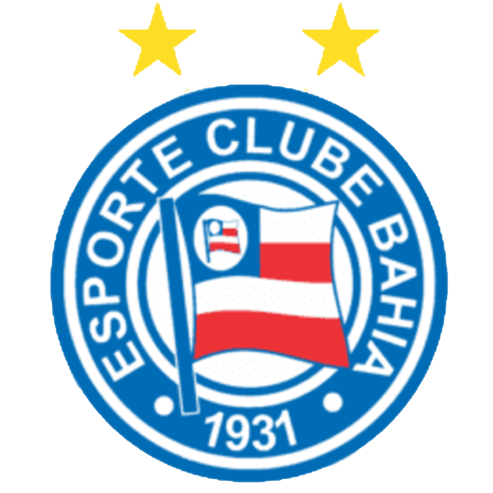
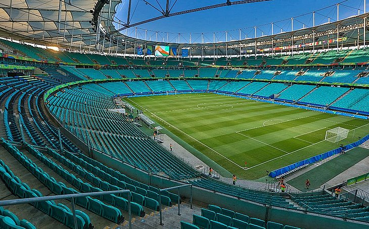

O Esporte Clube Bahia, ou simplesmente Bahia, é um clube da cidade de Salvador,
na Bahia. Foi
fundado em 1º de janeiro de 1931. Famoso pela fidelidade dos torcedores, mesmo quando
está em divisões inferiores, o
clube tem uma das maiores torcidas do Brasil. As grandes conquistas
são a Taça Brasil de 1959, tornando-se
o primeiro campeão nacional e o primeiro clube brasileiro a
participar da Copa Libertadores da América, ao
derrotar o Santos, e o Campeonato Brasileiro de 1988,
já organizado pela Confederação Brasileira de Futebol (CBF). E
foi com esta última taça que garantiu
vaga na Libertadores de 1989 e obteve o seu melhor
resultado, chegando às quartas de final.
|
VÍDEO EXPLICANDO SOBRE O BAHIA |
ARENA FONTE NOVA EM SALVADOR - BA  |
|
HINO DO BAHIA |
CANAL NO YOUTUBE SOBRE O BAHIA SITE DO BAHIA OFICIAL LOJA DO BAHIA |